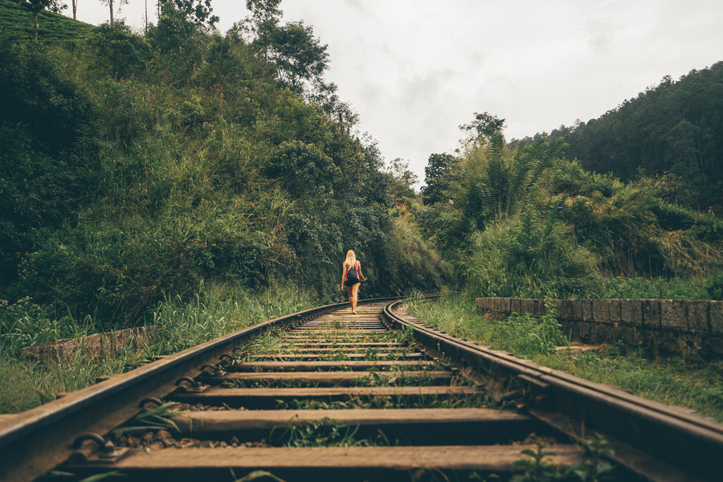
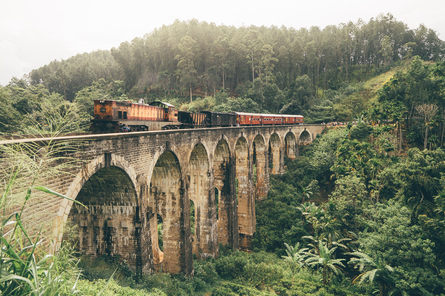
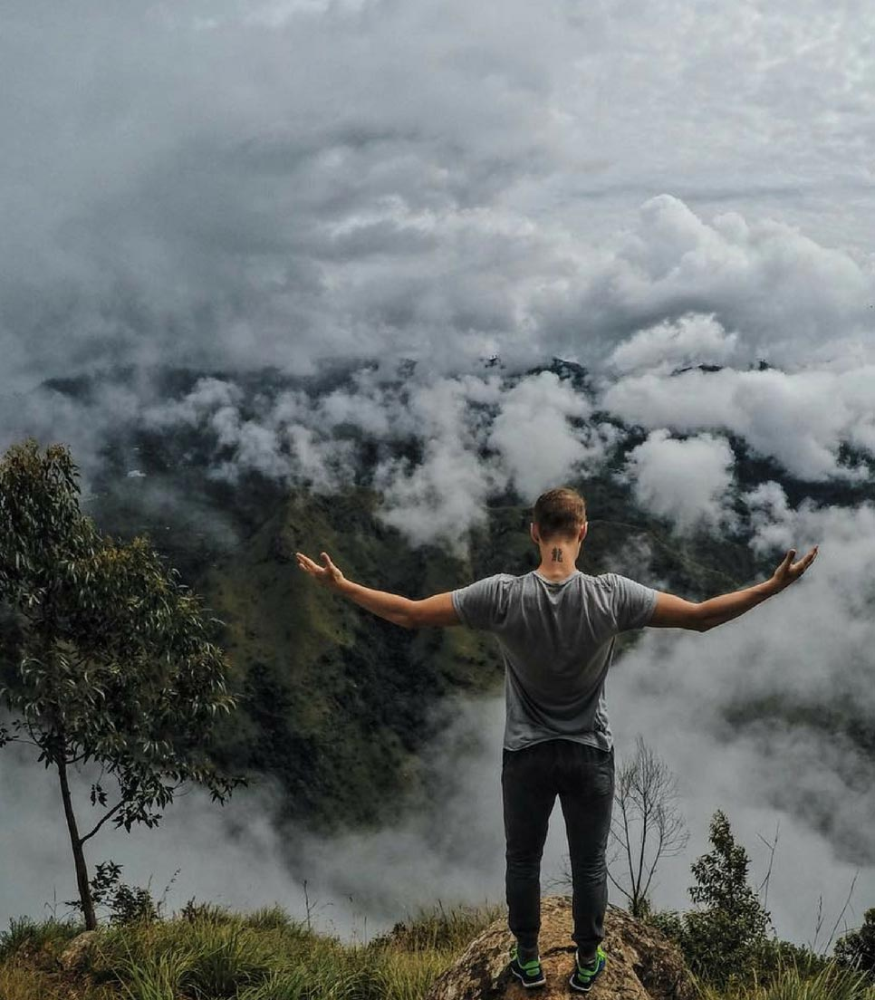
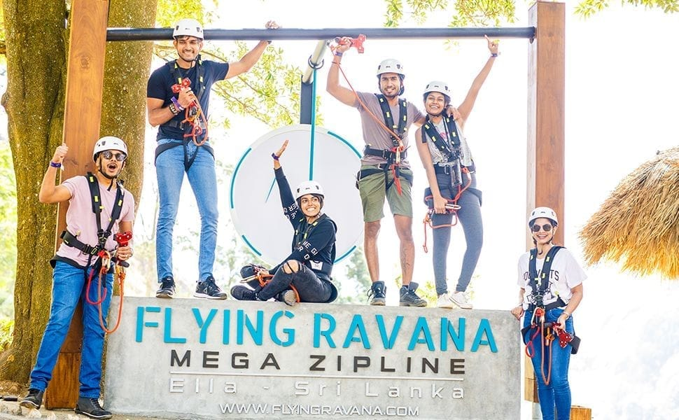

Ella has emerged as a prominent tourist destination in Sri Lanka, primarily attributed to its breathtaking landscapes and renowned hiking trails like Ella Rock and Little Adam's Peak. Nonetheless, it is the lesser-known attractions, concealed treasures, and relaxed ambiance of the town that entice visitors to prolong their stay for up to a week. Among these distinctive attractions is the Nine Arch Bridge, situated between Ella station and Demodara station. In this academic article, comprehensive information will be provided regarding the visitation of the Nine Arch Bridge in Sri Lanka.
Ella's growing popularity as a tourist hotspot can be attributed to its remarkable natural scenery and opportunities for exhilarating hikes in the surrounding region. The Ella Rock and Little Adam's Peak are iconic trails that offer panoramic views of the picturesque landscapes, attracting travelers from across the globe.
However, what truly sets Ella apart and makes it a preferred destination for many travelers is its authentic charm, tranquil atmosphere, and a myriad of hidden gems waiting to be discovered. Tourists often find themselves captivated by the town's laid-back vibes, leading them to extend their stay to fully immerse in its unique offerings.

You can alternatively take the Ella-Passara Road, turn left at Sri Kanaser Temple (where all the food booths are), and then walk to Nine Arch Bridge by following the signage past numerous guesthouses. Alternately, you can travel the entire distance to the bridge by following the train tracks from Ella town.
It's an amazing journey.
Nine Arch Bridge History

During the British Colonial era, the bridge was constructed at Gotuwala between the Ella and Demodara stations. Locally, it is known as "Ahas Namaye Palama," which is Sinhala for "nine skies bridge.
" The visual experience is where the name comes from. You can see the sky through the nine arches if you stand beneath the bridge and gaze up.
The unique characteristic of this bridge is that it is entirely made of rocks, bricks, and cement, with no usage of steel or other metals. The bridge was built in 1941,
and the legend has it that World War I broke out as the project was being planned. The steel and metal components intended for the bridge were redistributed for military usage. Then,
to ensure that the bridge construction continued, the materials were gathered in the shape of rocks, bricks, and cement.
Ella Rock

Ella Rock is a breathtaking natural landmark nestled in the picturesque town of Ella, Sri Lanka.
Renowned for its stunning panoramic views and challenging hiking trails,
it has become a must-visit destination for nature enthusiasts and adventure seekers alike.
Standing at an elevation of approximately 1,041 meters above sea level,
Ella Rock offers visitors an unparalleled vista of the surrounding lush green hills,
tea plantations, and distant valleys. The trek to the summit is an unforgettable experience,
taking adventurers through dense forests, terraced fields, and charming rural villages.
As you ascend, the air becomes crisp and refreshing, invigorating both body and mind.
Flying Ravana (Mega Zipline)
Flying Ravana

Flying Ravana Adventure park is one of a kind experience available in Sri Lanka, located amidst the luscious green estates of Ella. Completed with its pride, Sri Lanka’s first-ever Mega zip-line.
The two-wire zip-line stretches for more than half a kilometer, slides at 80kmph, and offers a bird’s-eye view of the beautiful hills of the island.
The adventure park is exclusively designed for adventure enthusiasts and adrenaline junkies who prefer a not-so-ordinary hillside experience, offering ATV/quad bike rides, Abseiling, Archery, and Air rifling for a gripping outdoor experience.
Little Adams Peak
Little Adam's Peak, located near the charming town of Ella in Sri Lanka,
is a popular trekking destination that offers awe-inspiring views and a
rewarding hiking experience. Despite its name, which may suggest a connection
to the more renowned Adam's Peak, this smaller sibling boasts its own unique charm and allure.
The trek to Little Adam's Peak is relatively easy and suitable for all ages and fitness levels.
It typically takes around 30 to 45 minutes to reach the summit,
making it an ideal choice for travelers looking for a quick adventure or
a refreshing morning activity. The trail is well-marked and takes hikers through tea plantations
, vibrant greenery, and gentle slopes.
Upon reaching the top, visitors are treated to a breathtaking panoramic view of Ella's lush landscapes.
The sight of rolling hills, carpeted in vibrant green tea leaves, stretches as far as the eye can see,
and the surrounding valleys create a picturesque setting. Many travelers choose to visit during sunrise or sunset,
as the play of light and shadow paints a stunning canvas across the scenery.
The summit also provides an excellent vantage point for capturing unforgettable photographs, making
it a haven for photography enthusiasts. Additionally, the cool breeze at the peak offers a refreshing
respite, providing the perfect opportunity to relax and soak in the natural beauty.
Little Adam's Peak has become a must-visit destination for nature lovers and adventure seekers alike,
offering a taste of Sri Lanka's magnificent landscapes without the arduous trek of its more massive namesake.
It's an excellent addition to any itinerary, providing a memorable and invigorating experience in the heart of Sri Lanka's hill country.